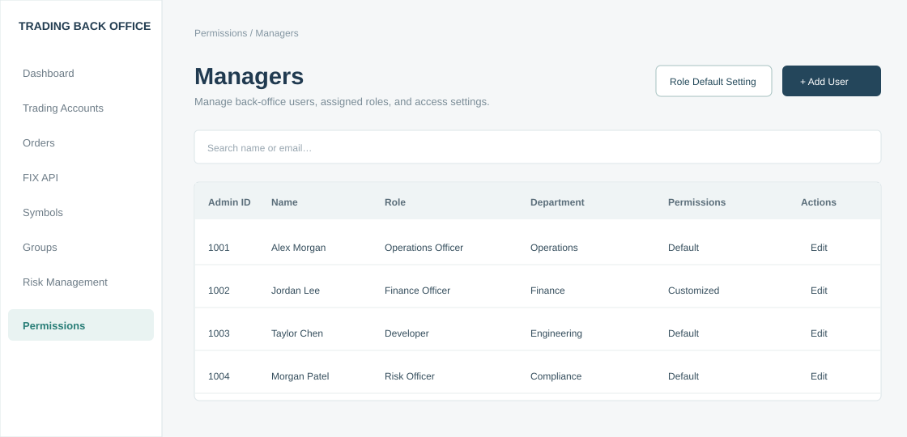
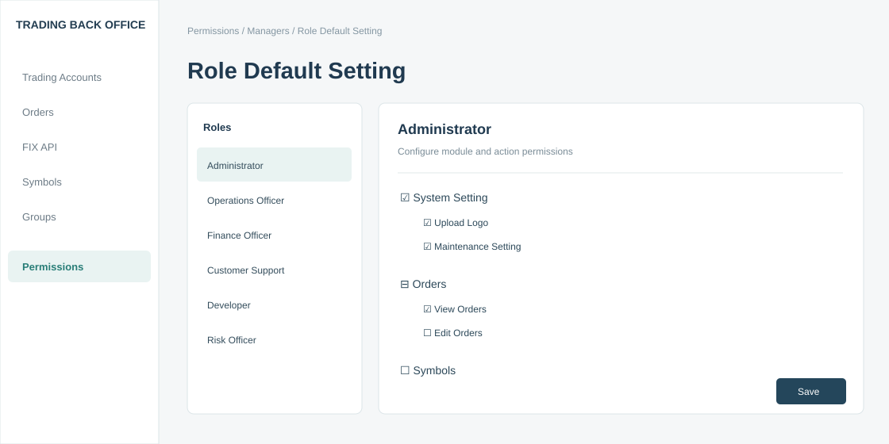

Reusable permission configurations
Each user is assigned one role. Administrators can manage predefined and custom role configurations centrally.
From shared access across internal teams to a more structured permission management experience—designed for the complexity of financial trading operations.
Explore the challenge, product decisions, delivery, and next steps.
While reviewing access management within an internal trading Back Office, I identified a critical gap: users across different teams operated under the same permission configuration, despite having different responsibilities.
The platform supported sensitive operational workflows, including trading accounts, order administration, symbol and group settings, FIX API management, and financial transactions such as deposits and withdrawals. Treasury, Dealing Desk, and Engineering teams needed access to different parts of the same system.
The challenge was to introduce more structured access management without making day-to-day administration unnecessarily complex.
I took ownership of the permission management initiative, translating the access-control problem into actionable requirements and coordinating the work needed to bring the feature into production.
My work covered permission structure, user management flows, granular interaction rules, and collaboration with stakeholders and the delivery team. The focus was to make a complex permission model usable for administrators who manage different operational functions.
This project was as much about execution as design: aligning the experience with real Back Office workflows and seeing the feature through to launch.
Each user is assigned one role. Administrators can manage predefined and custom role configurations centrally.
Permissions are organized by module and action, with View and Edit independently configurable.
Administrators can adjust permissions for a user without removing the user’s assigned role.
To manage many modules and operations efficiently, the interface uses a permission tree. Selecting a parent selects all child actions; deselecting it clears them. Partial selections are shown through an indeterminate state.
The feature lives inside the existing Back Office. Administrators start from the Managers list, where they can review a user’s department, assigned role, and Default or Customized permission status, then navigate to role settings or individual user editing.

Reusable role configurations make administration more consistent. Individual customization accommodates exceptions without requiring a new role for every person. Updating role defaults does not erase a user’s saved customization settings.
Viewing an order and editing an order are different capabilities. Modeling permissions at the action level enables more precise access configuration across sensitive operational workflows.
Parent-child selection reduces repetitive configuration work, while individual checkboxes and partial-selection feedback retain fine-grained control.
The original system’s exact effective-permission calculation after a role update has not been independently verified. The reconstructed demo does not claim to reproduce that backend behavior.
These workflows connect reusable role configuration with practical user administration, without forcing administrators to manage every account from scratch.
The release replaced the previous shared-permission approach with a structured way to configure access by role and individual operational needs.
No quantitative security, efficiency, or adoption impact is claimed here because verified measurements are not available.
The interactive reconstruction demonstrates the Managers entry point, role default editing, hierarchical permission selection, user creation and editing, customization, and confirmation flows.

Confidentiality note. This is a reconstructed portfolio prototype. Company branding, internal account information, and production data have been removed. Sample users, role configurations, and certain UI details are illustrative.
Role defaults with individual customization, View and Edit as separate actions, and a parent–child permission tree with partial selection.
Generated the interactive demo from my specification and iterated on flows and states from my feedback.
Reviewed the demo against the documented user flows. All users, roles and data are fictional.
Show administrators a clear view of the access a user ultimately holds when role defaults and individual settings interact.
Before applying role updates, surface which users and permissions may be affected so administrators can make informed decisions.
Explore an audit trail for permission changes to improve traceability and operational review.
These are retrospective improvement opportunities, not claims about features delivered in the original release.